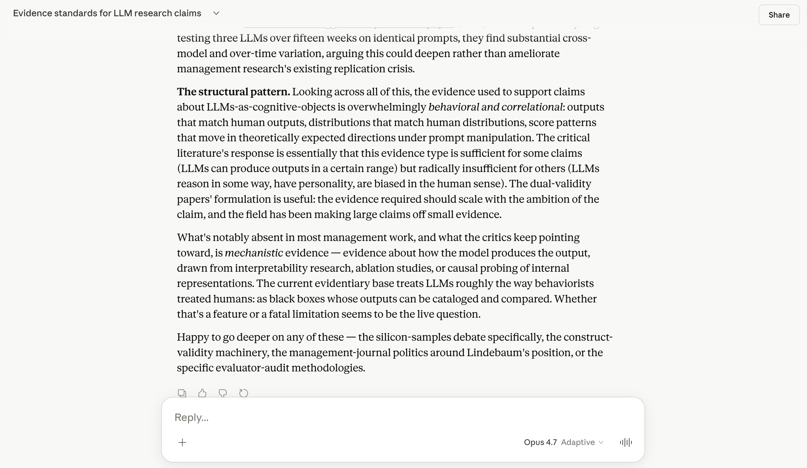
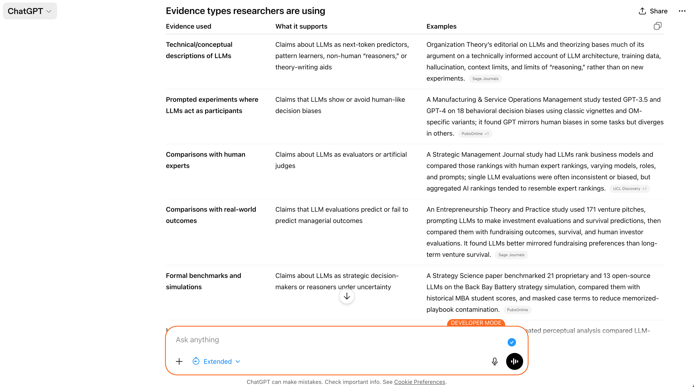
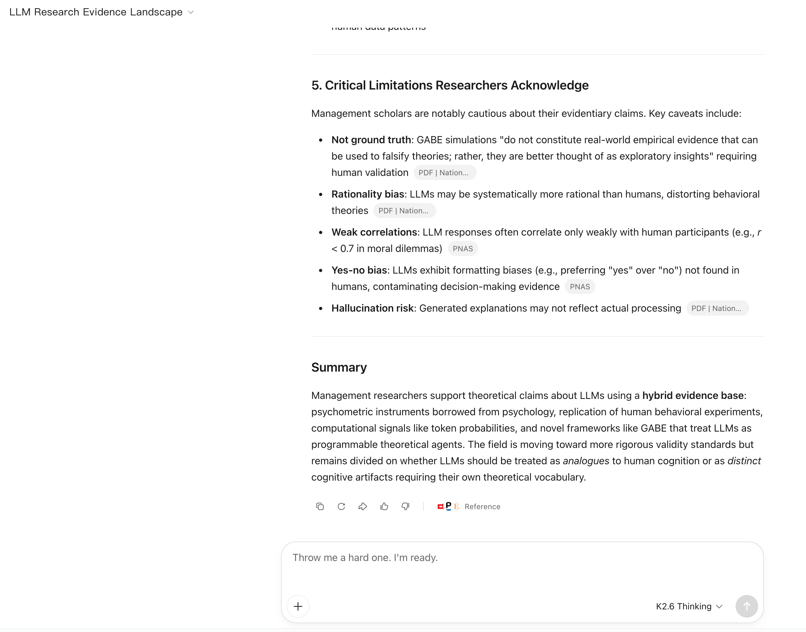
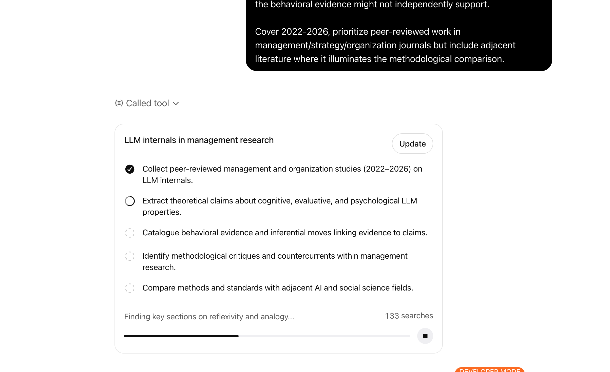
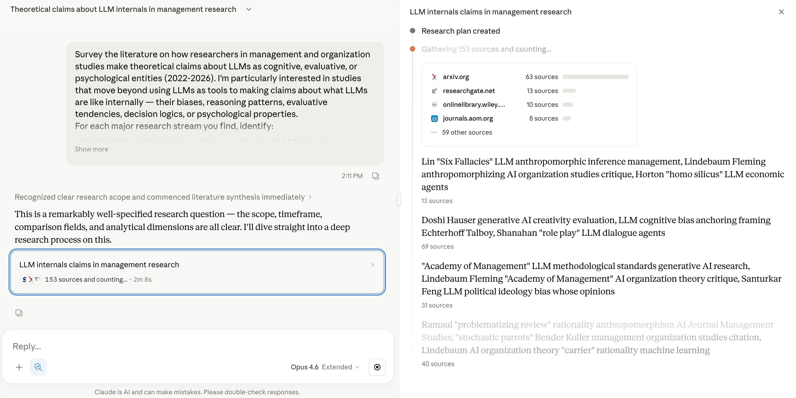

Let AI think for you.
Accept the outputs uncritically.
Efficient — and epistemically hollow.
Refuse to engage.
Wait it out.
Safe — and increasingly untenable.
There is a path between.
Let AI think for you.
Accept the outputs uncritically.
Efficient — and epistemically hollow.
Refuse to engage.
Wait it out.
Safe — and increasingly untenable.
There is a path between.
AI is a medium for developing understanding — not a machine that automates it for you.
The skill is in how you structure the interaction — not which button you press.
When the output disappoints, examine your input first.
We'll come back to them.
AI is a medium for developing understanding — not a machine that automates it for you.
The skill is in how you structure the interaction — not which button you press.
When the output disappoints, examine your input first.
We'll come back to them.
AI is a medium for developing understanding — not a machine that automates it for you.
The skill is in how you structure the interaction — not which button you press.
When the output disappoints, examine your input first.
We'll come back to them.
When management researchers run audits, evaluations, or experiments on LLMs — what methods do they use, and what kinds of claims do they make?
We'll use AI to interrogate how our field engages with AI.
The reflexive move is the point.
When management researchers run audits, evaluations, or experiments on LLMs — what methods do they use, and what kinds of claims do they make?
We'll use AI to interrogate how our field engages with AI.
The reflexive move is the point.
When management researchers run audits, evaluations, or experiments on LLMs — what methods do they use, and what kinds of claims do they make?
We'll use AI to interrogate how our field engages with AI.
The reflexive move is the point.
When management researchers run audits, evaluations, or experiments on LLMs — what methods do they use, and what kinds of claims do they make?
We'll use AI to interrogate how our field engages with AI.
The reflexive move is the point.
Thinking with AI as a colleague.
"When management researchers run audits, evaluations, or experiments on LLMs, what methods do they use and what kinds of claims do they make based on those methods?"
The act of writing this prompt forced me to know what I was actually looking for.
The clarity achieved through the prompt is the insight.
"Here are five dominant approaches: behavioral audits, decision-support deployment studies, ethnographic accounts, survey-based attitudes, and case studies of adoption…"
Competent.
Useful.
Don't accept it, yet.
Q1 → five canonical methods. Competent. Flat.
"Read this conversation. Why isn't it getting at what I'm actually trying to understand?"
Don't argue with the answer.
Bring the transcript into a new conversation, and ask the conversation what your prompt was carrying.
Methods researchers use on LLMs — audits, evaluations, experiments.
A literature about using LLMs in research.
How researchers treat LLMs as theoretical objects — evaluative cognition, compliance modes, fairness reasoning.
A literature about what LLMs are like.
Studies make claims about what LLMs are like — but the methods often can't license those claims.
The construct-method matching gap.
The conversation didn't fail. The frame did.
"When management researchers treat LLMs as theoretical objects of study — making claims about what LLMs are like as evaluators, decision-makers, reasoners, or cognitive entities — what evidence do they use to support those claims?"
Resist the instinct to blame the model (e.g., not smart, biased).
Observe whether the output mirrored the input.
Notice what the frame was.



Let agents discover. Then interrogate.
"Survey how management researchers treat LLMs as cognitive, evaluative, or psychological entities (2022–2026) — beyond using LLMs as tools."
What's being claimed about LLM internals — cognitive, evaluative, motivational, architectural?
Output patterns, human comparisons, behavioral paradigms, psychometric administration.
Where vocabulary borrows from psychology, behavioral economics, organizational theory.
Lin's Six Fallacies, dual-validity, Lindebaum & Fleming — what these critiques target.
AI alignment, interpretability, computational social science, HCI — where do management's standards diverge?
Where the same evidence supports multiple accounts. What work imported vocabulary does that the evidence can't.
A deep-research query is a contract.
Be precise about scope, structure, and what you want surfaced — let the agent split the work.


"Survey how management researchers treat LLMs as cognitive, evaluative, or psychological entities (2022–2026) — beyond using LLMs as tools…"
Design the workflow yourself — phases, sub-agents, parallelize where useful.
Redirect if a stream is thinner or richer than expected.
Document what you did and what you skipped.
A folder, not a chat.
/papers — PDFs, Zotero-ready filenames..bib + .ris — bibliography.stream_[N]_*.md — per-stream summaries.synthesis.md — cross-stream, the analytical core.phase_[N]_notes.md — phase-by-phase reasoning.README.md — decisions, skips, caveats.Quality bar — foundation for a published lit review. Inferential clarity over coverage breadth.
Be precise about what artifacts you expect — that is our half of the contract.
Be charitable about how the agent orchestrates — it knows its own runtime; let it split the work.
Stay clear on the analytical stages and outputs you want surfaced along the way.
"Most people stop here.
They cite the report and move on.
That's abdication
wearing a lab coat."
We'll walk path one in a moment. Path two is yours to take home.
"Here are deep research reports on how management research treats LLMs as cognitive entities.
Read them critically.
What assumptions do they carry?
What would a qualitative researcher notice that's missing?
What would a critical theorist push back on?"
A new session,
a different epistemic position.
Exploration.
Open-ended. Breadth-first.
The agent is your thinking partner.
"Let's read across the report. Where is it most coherent? Where does it strain?"
First, the open read.
The agent is your thinking partner — not your interrogator.
Exploration.
Open-ended. Breadth-first.
The agent is your thinking partner.
"Let's read across the report. Where is it most coherent? Where does it strain?"
Critical.
Step out of the field.
With another field's eyes — charitably both ways.
"Let's read this with AI-research eyes. Where does management's vocabulary diverge from how AI labs frame the same phenomena — and where would a management researcher reasonably push back?"
Not "you are X." Substantive perspective-taking — both sides have legitimate ground.
The difference is what you can't get from either alone.
Then, the critical read.
Collaborative framing — "let's read this as Y" — keeps the agent honest and keeps you in the loop.
When you can read along.
The narrowest bandwidth, but everything important is on the page.
Discovery you can't do alone, but the search itself stays opaque.
Same principles. Same practice.
The question sharpened — and the sharpening is the finding.
When management researchers run audits, evaluations, or experiments on LLMs, what methods do they use and what kinds of claims do they make based on those methods?
A reasonable opening, but soft. Look at what it becomes.
When management researchers run audits, evaluations, or experiments on LLMs, what methods do they use and what kinds of claims do they make based on those methods?
When management researchers treat LLMs as cognitive entities — evaluators, decision-makers, reasoners — what evidence licenses those claims, and what kinds of claims can that evidence actually support?
The question you end with matters more than the question you start with.
Remember when I rewrote the prompt because my first version was too generic.
Remember when I took the deep-research report to a fresh session for interrogation.
Remember when the output went flat and I looked at my input instead of the model.
"The purpose of this talk is not to teach you the content. It's to change how you think about the process."
Remember when I rewrote the prompt because my first version was too generic.
Remember when I took the deep-research report to a fresh session for interrogation.
Remember when the output went flat and I looked at my input instead of the model.
"The purpose of this talk is not to teach you the content. It's to change how you think about the process."
Remember when I rewrote the prompt because my first version was too generic.
Remember when I took the deep-research report to a fresh session for interrogation.
Remember when the output went flat and I looked at my input instead of the model.
"The purpose of this talk is not to teach you the content. It's to change how you think about the process."
Lin, X. & Corley, K. G. (2026). Strategic Organization.
Three models. Each maps to one configuration you just saw.
From Lin & Corley, Interpretive Orchestration. The models are the practice; the configurations are how it shows up at different bandwidths.
Deliberate contradiction to surface assumptions.
Systematic context-building for reproducibility.
Reading across independent analytical passes.
The question you end with matters more than the question you start with.
AI-augmented methods accelerate that movement and make it more visible.
They demand deeper and more rigorous engagements from us.